FOOD VARIETIES
🍚 Staple Dishes & Rice Varieties

Thukpa – A hearty noodle soup with vegetables, meat, and aromatic spices, popular in the region.
Khura – A traditional pancake made from buckwheat flour, often served with butter tea.
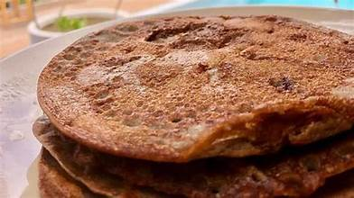
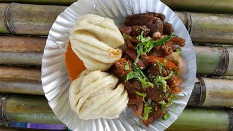
Momiya – Rice wrapped in banana leaves and steamed with herbs, offering an earthy flavor.
Zan – A millet-based porridge often eaten with boiled vegetables and fermented side dishes.

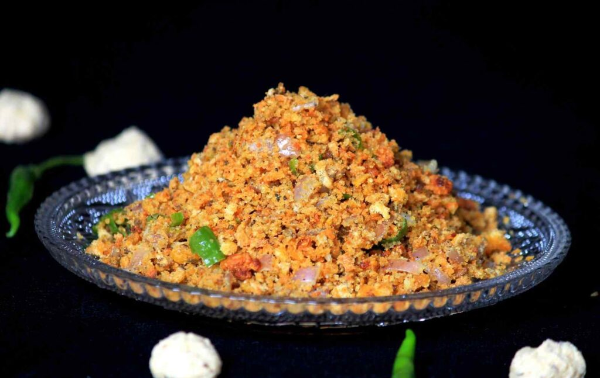
Chura Sabzi – A fermented cheese dish served with green leafy vegetables.
Rice Beer (Chhang) – A traditional homemade fermented rice drink enjoyed during festivals.

🥘 Signature Curries & Meat Delicacies
Pika Pila – A traditional pickle made with bamboo shoots and pork fat, giving a unique taste.


Ngatok – Fish cooked with local spices in a bamboo tube, giving it a smoky aroma.
Boiled Pork with Bamboo Shoots – A signature delicacy cooked with minimal spices.

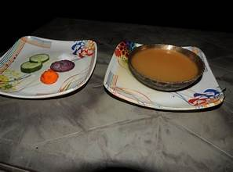
Marua – Fermented millet used as a base for curry or porridge.
Khamti Rice – A special variety of sticky rice unique to the Khamti tribe, served with bamboo shoot curry.
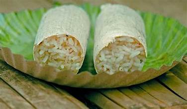

Pork with Lai Patta – Pork cooked with mustard leaves and local spices, giving a smoky flavor.
🥗 Savory Snacks & Sides
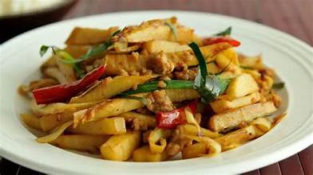
Bamboo Shoots – A tangy and flavorful side dish prepared with fermented bamboo shoots.
Wungwut Ngam – Fried rice balls made from sticky rice, served as a tasty snack.


Pehak – A spicy fermented soybean chutney, enjoyed with steamed rice.
Doh Neiiong – A pork curry cooked with black sesame paste, adding a rich and nutty flavor.
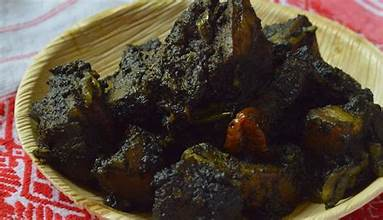
🍮 Sweet Treats & Desserts
Khapse – Deep-fried Tibetan biscuits, crispy and sweet, often enjoyed during festive occasions.
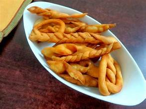
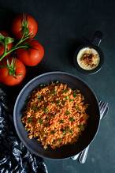
Gyapa Khazi – A flavorful rice dish prepared with fermented yak cheese and aromatic spices.
Koat Pitha – Deep-fried banana fritters made from a mixture of rice flour and jaggery.
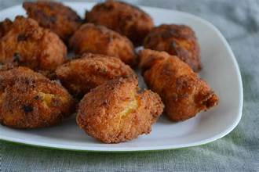
🥤 Refreshing Beverages
Butter Tea – A traditional beverage made from yak butter, tea leaves, and salt, offering warmth in the chilly weather.

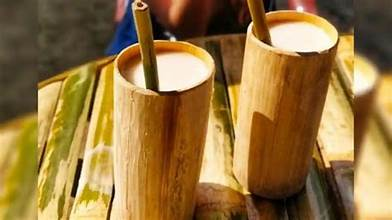
Apong – A local rice beer fermented from millet, enjoyed during celebrations and social gatherings.